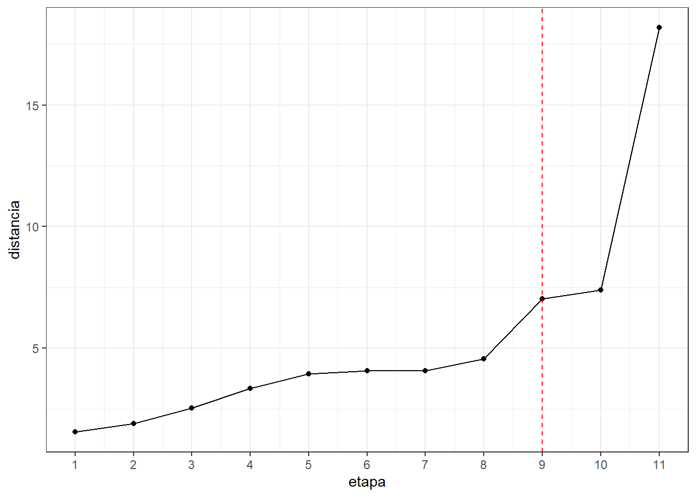
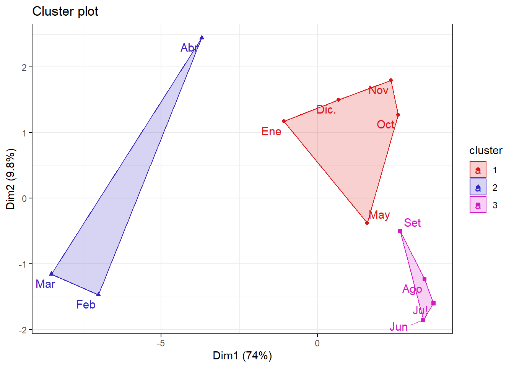
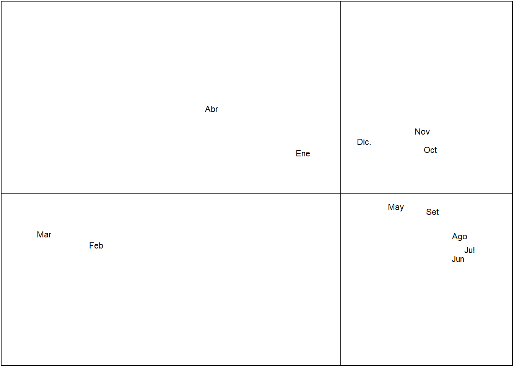

3.METODOS
3.1APLICANDO CLUSTER JERARQUICO
AGRUPAMIENTO DE INDIVIDUOS
library(readxl)
datosc <- read_excel("data_media.xlsx")Estructura: Tenemos 24 variables de formato numerico y 1 variable en formato character(meses)
str(datosc)## tibble [12 x 25] (S3: tbl_df/tbl/data.frame)
## $ meses: chr [1:12] "Ene" "Feb" "Mar" "Abr" ...
## $ Caud : num [1:12] 40.6 56 71.9 47.6 26.3 23.1 23.5 21.7 22.8 22.4 ...
## $ Temp : num [1:12] 19.2 20.2 20.2 20.1 18.5 17.2 16.6 15.7 16.5 18.6 ...
## $ pH : num [1:12] 7.7 7.8 7 7 8 7 7.8 7 7 8 ...
## $ Turb : num [1:12] 47.2 301.9 391.7 100.4 12.5 ...
## $ CE : num [1:12] 488 440 402 426 595 ...
## $ OD : num [1:12] 8.7 8.84 8.94 8.51 8.55 8.64 9 8.76 8.7 8.64 ...
## $ SD : num [1:12] 338 308 278 284 380 ...
## $ Akal : num [1:12] 95.6 91 81.6 91.3 120.4 ...
## $ DI : num [1:12] 211 189 165 176 255 ...
## $ Cls : num [1:12] 14.3 12.8 12.8 11.9 21.8 24.8 18.8 19.3 19.9 17.8 ...
## $ so : num [1:12] 138.6 116.5 97.5 114.6 146.7 ...
## $ N03 : num [1:12] 2.98 2.78 2.54 2.41 3.38 3.64 3.83 3.58 3.61 3.38 ...
## $ N02 : num [1:12] 0.2 0.13 0.08 0.1 0.21 0.3 0.23 0.28 0.18 0.24 ...
## $ PO : num [1:12] 0.2 0.14 0.09 0.18 0.23 0.28 0.32 0.38 0.36 0.34 ...
## $ Cu : num [1:12] 0.04 0.065 0.077 0.038 0.03 0.027 0.022 0.025 0.028 0.023 ...
## $ Al : num [1:12] 1.707 7.207 10.89 3.644 0.408 ...
## $ Fe : num [1:12] 2.176 7.595 11.37 4.471 0.434 ...
## $ Mu : num [1:12] 0.118 0.324 0.342 0.173 0.111 0.089 0.074 0.064 0.049 0.045 ...
## $ Pb : num [1:12] 0.024 0.081 0.079 0.056 0.015 0.02 0.013 0.015 0.022 0.012 ...
## $ Cd : num [1:12] 0.002 0.005 0.003 0.002 0.003 0.002 0.002 0.002 0.002 0.001 ...
## $ Zn : num [1:12] 0.372 0.611 0.641 0.343 0.468 0.323 0.273 0.28 0.28 0.171 ...
## $ As : num [1:12] 0.029 0.126 0.088 0.074 0.024 0.023 0.022 0.019 0.022 0.022 ...
## $ Colo : num [1:12] 178600 247014 208035 174967 160299 ...
## $ Cole : num [1:12] 74326 95332 90325 58096 63802 ...Convirtiendo en un dataframe:
datosc=as.data.frame(datosc)rownames(datosc)<- datosc$mesesEliminanos la variable meses(cualitativa)
datosc$meses=NULL
head(datosc,3)## Caud Temp pH Turb CE OD SD Akal DI Cls so N03 N02 PO
## Ene 40.6 19.2 7.7 47.2 487.71 8.70 337.86 95.6 211.4 14.3 138.6 2.98 0.20 0.20
## Feb 56.0 20.2 7.8 301.9 440.00 8.84 307.96 91.0 189.1 12.8 116.5 2.78 0.13 0.14
## Mar 71.9 20.2 7.0 391.7 401.96 8.94 278.04 81.6 164.6 12.8 97.5 2.54 0.08 0.09
## Cu Al Fe Mu Pb Cd Zn As Colo Cole
## Ene 0.040 1.707 2.176 0.118 0.024 0.002 0.372 0.029 178600 74326
## Feb 0.065 7.207 7.595 0.324 0.081 0.005 0.611 0.126 247014 95332
## Mar 0.077 10.890 11.370 0.342 0.079 0.003 0.641 0.088 208035 90325ANALISIS EXPLORATORIO
#Verificando si hay valores faltantes:
#Detectando y graficando los % de datos perdidos
#No hay valores perdidos en ninguna variable
library(DataExplorer)
library(ggplot2)
plot_missing(datosc,ggtheme=theme_minimal())
#estandarizamos los datos porque las variables se encuentran en diferentes escalas
datosc <- as.data.frame(scale(datosc))CLUSTER JERARQUICO AGLOMERATIVO
Distancia euclidiana y metodo de enlace Ward.D2
#-----------------------------------
#calculando la matriz de disimilaridad
d <- dist(datosc, method = "euclidean")
#el metodo ward.d2 ,para reconstruir la matriz distancia
res.hc <- hclust(d, method = "ward.D2" ) res.hc$merge## [,1] [,2]
## [1,] -10 -11
## [2,] -8 -9
## [3,] -1 -12
## [4,] -6 2
## [5,] -7 4
## [6,] -5 1
## [7,] -2 -3
## [8,] 3 6
## [9,] -4 7
## [10,] 5 8
## [11,] 9 10#formacion de "n" cluster hasta 1 cluster
#observamos que son 11 etapas:
#En la etapa 1
#el individuo 10 y el individuo 11 forman un cluster
#En la entapa 2
#el individuo 8 y el individuo 9 forman un cluster
#y asi sucesivamente hasta llegar a la etapa 11 donde se
#forma un solo cluster#estructura:
str(res.hc)## List of 7
## $ merge : int [1:11, 1:2] -10 -8 -1 -6 -7 -5 -2 3 -4 5 ...
## $ height : num [1:11] 1.55 1.9 2.54 3.36 3.95 ...
## $ order : int [1:12] 4 2 3 7 6 8 9 1 12 5 ...
## $ labels : chr [1:12] "Ene" "Feb" "Mar" "Abr" ...
## $ method : chr "ward.D2"
## $ call : language hclust(d = d, method = "ward.D2")
## $ dist.method: chr "euclidean"
## - attr(*, "class")= chr "hclust"options(scipen = 999)#sin notacion cientifica#distancia
res.hc$height## [1] 1.554549 1.904331 2.540561 3.359679 3.950460 4.065524 4.075132
## [8] 4.573464 7.031689 7.392952 18.178469EL NUMERO DE CLUSTER
#Hemos considerado que un cambio brusco seria de la etapa 9
#a la etapa 10,entonces el numero de cluster es 3
library(ggplot2)
alturas <- data.frame(etapa=1:11,distancia=res.hc$height)#distancia
alturas## etapa distancia
## 1 1 1.554549
## 2 2 1.904331
## 3 3 2.540561
## 4 4 3.359679
## 5 5 3.950460
## 6 6 4.065524
## 7 7 4.075132
## 8 8 4.573464
## 9 9 7.031689
## 10 10 7.392952
## 11 11 18.178469#screeplot con las distancias
ggplot(alturas) + aes(x=etapa,y=distancia) +
geom_point() + geom_line() +
scale_x_continuous(breaks=seq(1,15)) +
geom_vline(xintercept = 9,col="red",lty=2) +
theme_bw() 
# Dividir en 3 clusters
#La asignacion de cada elemento(mes) a cada cluster
grp <- cutree(res.hc, k = 3)
grp ## Ene Feb Mar Abr May Jun Ju! Ago Set Oct Nov Dic.
## 1 2 2 2 1 3 3 3 3 1 1 1#cluster1:
#enero,mayo,octubre,noviembre y diciembre
#cluster2:
#febrero,marzo,abril
#cluster3:
#junio,julio,agosto,setiembreDEDONGRAMA
#visualizacion de los 3 cluster:
library(factoextra)## Welcome! Want to learn more? See two factoextra-related books at https://goo.gl/ve3WBafviz_dend(res.hc, k=3, cex = 0.5,
k_colors = rainbow(3), # Colores del arco iris
color_labels_by_k = TRUE,
rect=T)
#conclusion del dendograma:
#estiage(fujo bajo del rio):
#junio,julio,agosto y setiembre
#transicion(incremento o disminucion del flujo del rio):
#octubre, noviembre , diciembre , enero y mayo
#avenida(flujo alto de rio):
#febrero, marzo y abril.
#En nuestro dendograma concluimos que los meses de transicion son
#octubre, noviembre , diciembre , enero y mayo son meses que
#esta en un ritmo de cambio o bien sube el nivel del agua del rio
#o bien baja el nivel del agua del rio,es decir
#para que el nivel del agua del rio sea de flujo alto(avenida),en los
#meses previos como enero,diciembre,noviembre,octubre tuvo que aumentar
#de poco a poco el nivel del agua hasta que febrero,marzo y abril
#(periodo flujo del rio es alto),luego llegando al mes de mayo
#comienza a disminuir el nivel del agua de rio rimac este es el mes transicion
#despues en los meses posteriores junio,julio,agosto y setiembre
#el nivel flujo del rio es bajo.#conclusion del tesista:
#estiaje:
#mayo,junio,julio, agosto, setiembre y octubre
#transicion(generan cambios inesperados o esperados):
#noviembre, diciembre y enero
#avenida:
#febrero, marzo y abril.GRAFICA#ACP con CLUSTER
GRAFICO 1
#Se puede apreciar que con 2 componentes retenemos 83.8% de la inercia total
library(factoextra)
fviz_cluster(list(data = datosc, cluster = grp),
palette =c("#DB1515", "#3722BF", "#D41AC4") ,
ellipse.type = "convex", # Concentration ellipse
repel = T, # Avoid label overplotting (slow)
show.clust.cent = FALSE, ggtheme = theme_bw())
# Juntando el archivo de "datos" con la columna de "cluster"
datos.j <- cbind(datosc,grp)#convirtiendo en factor la varaible "grp"
datos.j$grp <- factor(datos.j$grp)
#Si deseamos exportar :
# write.csv(datos.j,"Compras con Jerarquico Aglomerativo.csv")Analisis de componenentes principales:
ANALISIS EXPLORATORIO :
library(GGally)## Registered S3 method overwritten by 'GGally':
## method from
## +.gg ggplot2ggcorr(datosc)
#Se puede observar que entre las 24 variables, hay correlaciones muy altas , correlaciones altas y correlaciones medias.
#esto podria traer problemas de multicolinealidad.Prueba de Esfericidad de Bartlett
library(psych)##
## Attaching package: 'psych'## The following objects are masked from 'package:ggplot2':
##
## %+%, alphacorrelaciones<- corr.test(datosc) # se crea la matriz de correlaciones
#correlaciones$r # existe correlaciones entre las variables
library(rela)
r<-as.matrix(correlaciones$r)
options(scipen=999)
cortest.bartlett(r,nrow(datosc))## Warning in log(detR): Se han producido NaNs## $chisq
## [1] NaN
##
## $p.value
## [1] NaN
##
## $df
## [1] 276# Prueba de Esfericidad de Bartlett
#Prueba de Esfericidad de Bartlett
#Ho: |Rp|=1 (las correlaciones teóricas entre cada par de variables es nulo)
#H1: |Rp|≠1 (las correlaciones teóricas entre cada par de variables NO es nulo)
#conclusion:
#p-valor < 0.05 ,
#se rechaza la H0, se puede afirmar que las las correlaciones teóricas entre cada par de variables NO es nulo.
#en otras palabras nuestra matriz correlacion es diferente a la matriz identidad
#podemos realizar analisis de componentes principales.Indicador Kaiser-Meyer-Olkinn KMO y MSA
## Error in solve.default(r) :
## sistema es computacionalmente singular: número de condición recíproco = 2.02895e-19## Kaiser-Meyer-Olkin factor adequacy
## Call: KMO(r = datosc)
## Overall MSA = 0.5
## MSA for each item =
## Caud Temp pH Turb CE OD SD Akal DI Cls so N03 N02 PO Cu Al
## 0.5 0.5 0.5 0.5 0.5 0.5 0.5 0.5 0.5 0.5 0.5 0.5 0.5 0.5 0.5 0.5
## Fe Mu Pb Cd Zn As Colo Cole
## 0.5 0.5 0.5 0.5 0.5 0.5 0.5 0.53.2Análisis de Componentes Principales con el paquete ade4
CORROBORANDO LA GRAFICA 1
¿se podra explicar con 2 componentes todas las 24 variables ?
vamos a comprobar:
En el Grafico 1, se podia apreciar que con 2 componentes(retiene 83.8% de la inercia total) se podria explicar todas las 24 variables.
¿Cuantos componentes?
library(ade4)
acp <- dudi.pca(datosc,scannf=FALSE,nf=ncol(datosc))
summary(acp) ## Class: pca dudi
## Call: dudi.pca(df = datosc, scannf = FALSE, nf = ncol(datosc))
##
## Total inertia: 24
##
## Eigenvalues:
## Ax1 Ax2 Ax3 Ax4 Ax5
## 17.7541 2.3548 1.3683 0.9189 0.5800
##
## Projected inertia (%):
## Ax1 Ax2 Ax3 Ax4 Ax5
## 73.976 9.812 5.701 3.829 2.417
##
## Cumulative projected inertia (%):
## Ax1 Ax1:2 Ax1:3 Ax1:4 Ax1:5
## 73.98 83.79 89.49 93.32 95.73
##
## (Only 5 dimensions (out of 11) are shown)Podemos observar que con 2 componenetes retenemos 83.79 % de la inercia total
Podemos observar que con 3 componenetes retenemos 89.49 % de la inercia total
Podemos observar que con 4 componenetes retenemos 93.32 % de la inercia total
Podemos observar que con 5 componenetes retenemos 95.73 % de la inercia total
CRITERIO DE LA MEDIA
# Valores propios
#el criterio de la media:
#estamos trabajando con la matriz correlacion cada variable deberia retener
#1% de la inercia total , nos quedamos con los 3 primeros autovalores
#que son mayores a 1.
acp$eig ## [1] 17.75412281 2.35476144 1.36828719 0.91885927 0.58004727 0.40691705
## [7] 0.24251967 0.16344726 0.11008407 0.06970343 0.03125052Conclusion:
3 componentes podemos explicar todas las 24 variables reteniendo 89.49 % de la inercia total.
# con 3 componetes podemos explicar las todas las 24 variables
# reteniendo 89.49% de la inercia total
inertia.dudi(acp)## Inertia information:
## Call: inertia.dudi(x = acp)
##
## Decomposition of total inertia:
## inertia cum cum(%)
## Ax1 17.75412 17.75 73.98
## Ax2 2.35476 20.11 83.79
## Ax3 1.36829 21.48 89.49
## Ax4 0.91886 22.40 93.32
## Ax5 0.58005 22.98 95.73
## Ax6 0.40692 23.38 97.43
## Ax7 0.24252 23.63 98.44
## Ax8 0.16345 23.79 99.12
## Ax9 0.11008 23.90 99.58
## Ax10 0.06970 23.97 99.87
## Ax11 0.03125 24.00 100.00¿Como estan agrupadas las variables?
Nos basamos del criterio de las correlaciones
# Correlaciones entre las variables y los componentes
acp$co[c(1,2,3)] ## Comp1 Comp2 Comp3
## Caud -0.9856905 -0.01901796 0.07578045
## Temp -0.8575730 0.34464942 -0.26784995
## pH 0.1718367 0.32044552 -0.74235041
## Turb -0.9346113 -0.23625366 0.04170687
## CE 0.9441237 -0.27906809 -0.12008220
## OD -0.2805474 -0.66047211 0.18988850
## SD 0.9217281 -0.33148387 -0.01124840
## Akal 0.9013802 -0.30784486 -0.16592703
## DI 0.9190383 -0.32601318 -0.17526601
## Cls 0.7834060 -0.44555826 -0.13405671
## so 0.9720223 -0.12524082 -0.11183695
## N03 0.8933136 -0.39175400 -0.02728335
## N02 0.8656142 -0.26140158 -0.19080927
## PO 0.9171172 0.02090579 0.18088859
## Cu -0.9478302 -0.27917688 0.01341109
## Al -0.9482153 -0.21768133 0.12213858
## Fe -0.9559193 -0.19131422 0.14078444
## Mu -0.9553130 -0.27329191 -0.04917357
## Pb -0.9570670 -0.17625217 0.09659005
## Cd -0.6493169 -0.55943616 -0.26456602
## Zn -0.8225078 -0.45618080 -0.15216823
## As -0.9213033 -0.15271183 -0.06553008
## Colo -0.8002671 0.02046972 -0.42279859
## Cole -0.7701392 -0.05606211 -0.45376503##############
#componente1:#
##############
#caudal
#temp
#Turb
#CE
#SD
#Akal
#Di
#Cls
#so
#NO3
#NO2
#PO
#Cu
#Al
#Fe
#Mu
#Pb
#Cd
#Zn
#As
#Colo
#Cole
##############
#componente2:#
##############
#OD
##############
#componente3:#
##############
#pH# Segunda forma
#podemos observar que todos las variables estan asociados mas a la
#dimension 1,excepto "pH" y "OD" que no se sabe con exactitud si pertenece
#a la dimension 1 o a la dimension2 de manera visual, pero con la matriz de
#correlacion ya determinamos la variable "pH" pertenece al componente3
#y la variable "OD" pertenece al componente2
library(factoextra)
fviz_pca_var(acp, col.var="steelblue")+theme_minimal()
#biplot
library(factoextra)
fviz_pca_biplot(acp, repel = F,
col.var = "steelblue",
col.ind = "black" )
###indicadores# Grafica de Valores propios - ScreePlot
#El primer componente retiene 74% de la inercia total
#El segundo componete retiene 9.8% de la inercia total
#El tercer componente retiene 5.7% de la inercia total
fviz_eig(acp, addlabels=TRUE, hjust = -0.3,
barfill="white", barcolor ="darkblue",
linecolor ="red") + ylim(0,80) + theme_minimal() 
# Scores o Puntuaciones de cada individuo
acp$li[1:10,]## Axis1 Axis2 Axis3 Axis4 Axis5 Axis6
## Ene -1.127415 1.2241429 -0.4215330 -0.3069565 -0.3072154 0.5909263
## Feb -7.321424 -1.5374149 -1.7252348 -0.2105345 0.3720162 -1.3205681
## Mar -8.892270 -1.2061457 1.2481771 -0.3727598 -0.6528833 0.9233570
## Abr -3.864966 2.5559978 1.5588401 1.1385843 0.8984151 -0.1376243
## May 1.653208 -0.3952227 -1.8173027 0.8938132 1.3875461 0.9216302
## Jun 3.526615 -1.9367091 -0.4606773 1.7958715 -0.9212378 0.2697353
## Ju! 3.869064 -1.6735475 0.6922911 -2.0693134 0.9202398 0.3494768
## Ago 3.572872 -1.2874593 1.1904835 0.2296801 -0.4971626 -0.6145975
## Set 2.750543 -0.5237799 1.5165983 0.4543415 0.3037690 -0.4558362
## Oct 2.683794 1.3317449 -0.4582014 -0.5302654 -0.2501176 -0.3660676
## Axis7 Axis8 Axis9 Axis10 Axis11
## Ene -0.84209863 -0.02700337 0.59513448 0.137731734 -0.28618041
## Feb -0.13501618 0.03468823 -0.03902637 0.002647073 -0.06441864
## Mar 0.58541501 -0.14879593 0.06992054 0.007971082 0.08189278
## Abr -0.31046195 0.48237032 -0.25722398 -0.141189009 0.04003613
## May 0.09566827 -0.35219885 0.10107401 -0.032481919 0.19247022
## Jun 0.16195478 0.52714861 -0.22255381 -0.029503045 -0.18782676
## Ju! -0.14638363 0.41431959 -0.26683245 -0.103079184 -0.08997632
## Ago -0.46137750 -0.18005665 0.45333052 -0.377893091 0.25847307
## Set -0.02392110 -0.70148298 -0.21355210 0.542836370 -0.08427214
## Oct 0.63474890 0.61201151 0.34990784 0.422157105 0.20330096# Gráfica de individuos sobre el primer plano de componentes
s.label(acp$li,clabel=0.7,grid=FALSE,boxes=FALSE)